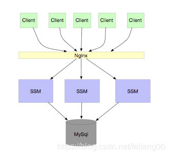
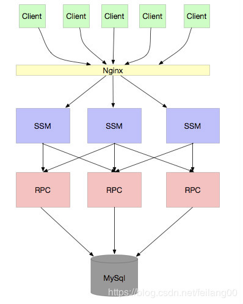
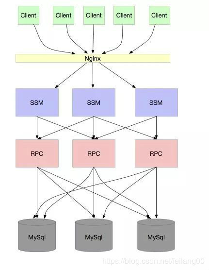
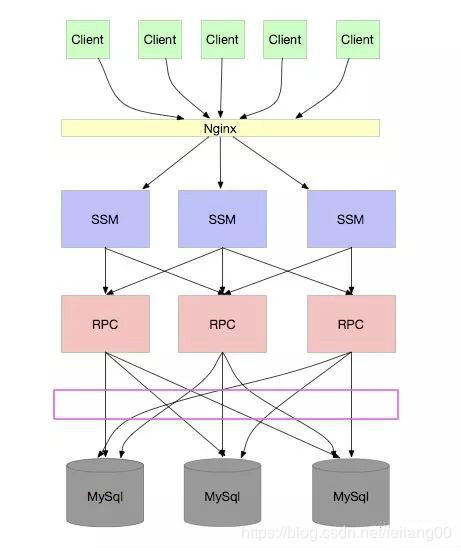
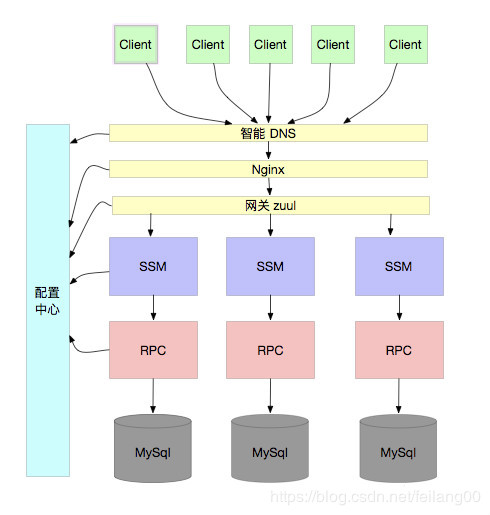

像我这样的菜鸟，总会有各种疑问，刚开始是对 JDK API 的疑问，对 NIO 的疑问，对 JVM 的疑问，当工作几年后，对服务的可用性，可扩展性也有了新的疑问，什么疑问呢？其实是老生常谈的话题：服务的扩容问题。
让我们从最初开始。
单体应用 每个创业公司基本都是从类似 SSM 和 SSH 这种架构起来的，没什么好讲的，基本每个程序员都经历过。
RPC 应用 当业务越来越大，我们需要对服务进行水平扩容，扩容很简单，只要保证服务是无状态的就可以了，如下图：

当业务又越来越大，我们的服务关系错综复杂，同时，有很多服务访问都是不需要连接 DB 的，只需要连接缓存即可，那么就可以做成分离的，减少 DB 宝贵的连接。如下图：

我相信大部分公司都是在这个阶段。Dubbo 就是为了解决这个问题而生的。
如果你的公司产品很受欢迎，业务继续高速发展，数据越来越多，SQL 操作越来越慢，那么数据库就会成为瓶颈，那么你肯定会想到分库分表，不论通过 ID hash 或者 range 的方式都可以。如下图：

这下应该没问题了吧。任凭你用户再多，并发再高，我只要无限扩容数据库，无限扩容应用，就可以了。
这也是本文的标题，分库分表就能解决无限扩容吗？
实际上，像上面的架构，并不能解决。
其实，这个问题和 RPC 的问题有点类似：数据库连接过多！！！
通常，我们的 RPC 应用由于是使用中间件进行访问数据库，应用实际上是不知道到底要访问哪个数据库的，访问数据库的规则由中间件决定，例如 sharding JDBC。这就导致，这个应用必须和所有的数据库连接，就像我们上面的架构图一样，一个 RPC 应用需要和 3 个 mysql 连接，如果是 30 个 RPC 应用，每个 RPC 的数据库连接池大小是 8 ，每个 mysql 需要维护 240 个连接，我们知道，mysql 默认连接数是 100，最大连接数是 16384，也就是说，假设每个应用的连接池大小是 8 ，超过 2048 个应用就无法再继续连接了，也就无法继续扩容了。
注意，由于每个物理库有很多逻辑库，再加上微服务运动如火如荼， 2048 并没有看起来那么大。
也许你说，我可以通过前面加一个 proxy 来解决连接数的问题，实际上，代理的性能也会成为问题，为什么？代理的连接数也是不能超过 16384 的，如果并发超过 16384，变成 163840，那么 proxy 也解决不了问题。
怎么办？让我们再看看上面的架构图：

我们发现，问题是出在 “每个 RPC 应用都要连所有的库”，导致扩容应用的同时，每个数据库连接数就要增加。就算增加数据库，也不能解决连接数的问题。
那怎么办呢？
单元化，听起来高大上，通常在一些 XXX 大会上，分享 “关于两地三中心”，“三地五中心”，“异地多活” 等等牛逼的名词的时候，单元化也会一起出现。
这里我们不讨论那么牛逼的，就只说 “数据库连接数过多” 的问题。
实际上，思路很简单：我们不让应用连接所有的数据库就可以了。
假设我们根据 range 分成了 10 个库，现在有 10 个应用，我们让每个应用只连一个库，当应用增多变成 20 个，数据库的连接不够用了，我们就将 10 个库分成 20 个库，这样，无论你应用扩容到多少个，都可以解决数据库连接数过多的问题。
注意：做这件事的前提是：你必须保证，访问你这个应用的 request 请求的数据库一定是在这个应用的。s
换个说法，当用户从 DNS 那里进来的时候，就知道自己要去那个应用了，所以，规则在 DNS 之前就定好了，虽然这有点夸张，但肯定在进应用之前就知道要去哪个库了。
所以，这通常需要一个规则，例如通过用户 ID hash，由配置中心广播 hash 规则。这样，所有的组件都能保持一致的规则，从而正确的访问到数据库。如下图：

到这里，我们终于解决了无限扩容的问题。
本文从单体应用开始，逐步讲述了一个正常后台的演进历程，知道了分库分表并不能解决 “无限扩容” 的问题，只有单元化才能解决这问题。而单元化则带来更多的复杂性。但是好处不言而喻。
单元化带来的更多的思路。
有了单元化，解决了无限扩容的问题，但是我们还没有考虑单点的问题，即服务的可用性。要知道，我们这里的数据库都是单点的。
“不积跬步，无以至千里”，希望未来的你能：有梦为马 随处可栖！加油，少年！
关注公众号:「Java 知己」，每天更新Java知识哦，期待你的到来！